Overview
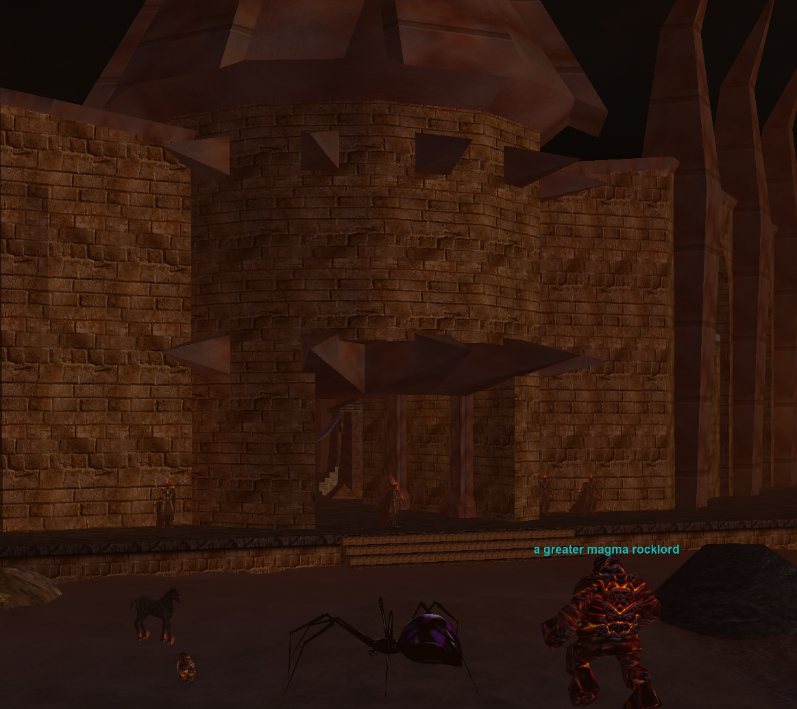
All Plane of Fire bosses are Immune to Fire
The ten plane bosses are covered in their own sections below; the Fennin Ro army event and the Tyrant of Fire himself are covered in the Ring Events and Fennin Ro sections.
Ring Events
The Fennin Ro Event
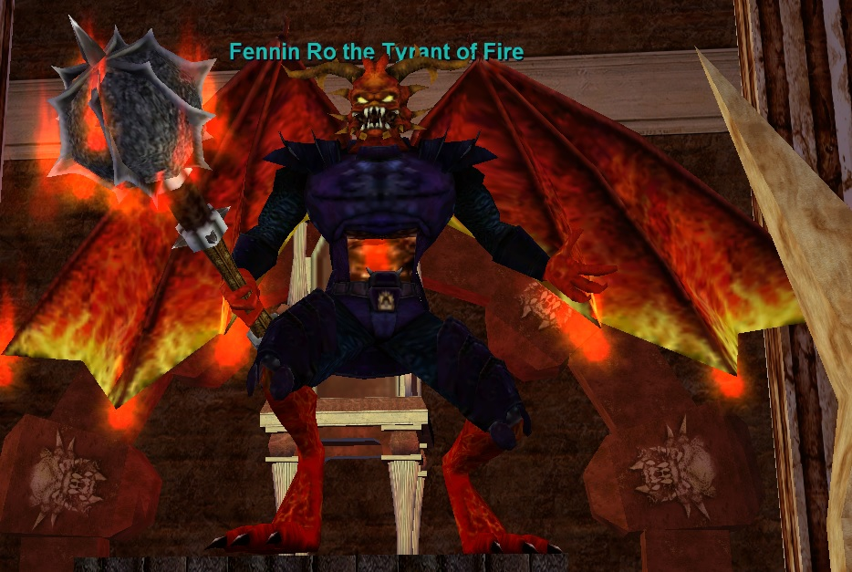
Below is a map of the general layout of the event.
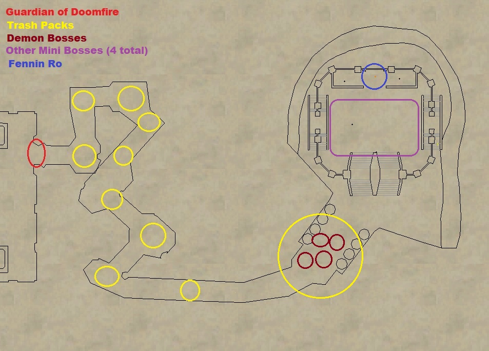
Kill Guardian of Doomfire to start the event. He has approx 3 day respawn.
Fight Info
- 150,000 HP (PQDI; eqprogression estimated ~175K)
- Hits 238–1515 (PQDI; eqprogression estimated 1500+)
- Slowable
- Flurries
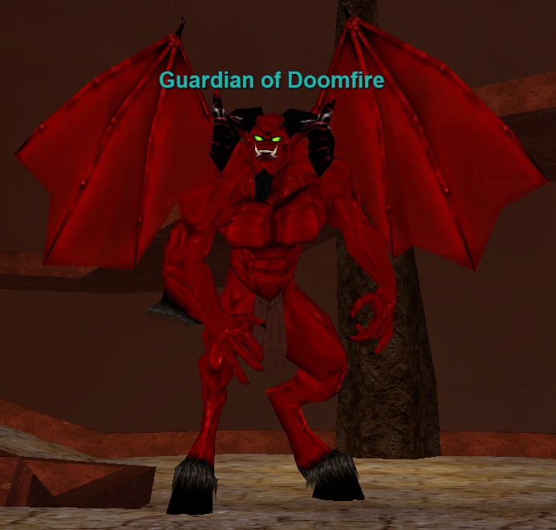
Quarm Script
Sourced from the Quarm server Lua script (pofire/encounters/Fennin.lua, SecretsOTheP/quests):
- Phase 1 of the army event — defeating the Guardian of Doomfire (217050) triggers the first army wave: 17 Rage Reavers of Flame (217417), 6 Chaos Healers of Flame (217418), 8 Dark Magi of Flame (217419), and 3 each of Doomfire Darkfiend (217421), Doomfire Chaosfiend (217420), and Doomfire Ragefiend (217422), spawned at fixed locations along the field.
- The Guardian's death also starts the event failure timer (~4 hours 52 minutes), which pauses while any event mob is in combat and resumes once combat ends.
- On timer expiry (failure), all event mobs are depop'd and the Guardian's spawn (367088) is set to respawn in 18 hours.
- On event success (Fennin Ro defeated), the same spawn is instead set to respawn in 5 days 18 hours.
| Level | 70 |
|---|---|
| HP | 150,000 |
| Hits | 238 - 1515 |
| Resistances | MR 125 / CR 50 / FR 1000 / DR 90 / PR 110 |
| Special Abilities | Summon, Enrage, Flurry, Dual Wield, Do Not Equip, Magical Attack, Unmezzable, Uncharmable, Unstunable, Unsnarable, Unfearable, Immune to fleeing, Immune to melee except magical, NO LOITERING |
Cross-referenced from pqdi.cc (Project Quarm Database Interface)
Trash Packs
Kill the trash packs (smaller yellow circles on the above map). They have a small aggro radius so in some cases they won’t all aggro at once. The doomfire “demon models” are rootable. They rampage and can hit for 2000+. The packs are all slowable. There are 9 packs (if I counted right).
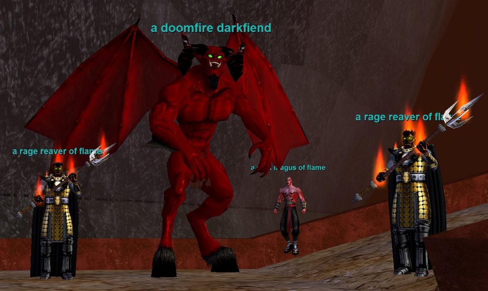
Quarm Script
Sourced from the Quarm server Lua script (pofire/encounters/SnareImmunity.lua, SecretsOTheP/quests):
- Covers 8 field trash types: obsidian tree spiders (217048, 217455), obsidian tree spiderling (217002), fiery spirit steed (217423), jopal hunter (217007), jopal gatherer (217028), flame lord (217029), flame lordling (217006), and jopal lavahurler (217047).
- On spawn, each mob has a 20% chance to gain special ability 16 (snare) set to 1, making it immune to snares.
- A single shared spawn handler applies the check to all eight types rather than duplicating the mechanic per mob.
The Four Lords
Once you clear all the trash packs 4x named and some additional trash will spawn. Keep the raid away from them so the pullers have room to split.
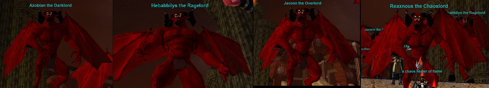
Azobian the Darklord
- 190,000 HP (PQDI; eqprogression estimated 220K)
- Slowable
- Hit me for 1100 max only on 35 Hstam Warrior, but likely hits harder
- Casts Infernal Darkness (PBAE, Blind, Unresistable, 30 sec recast)
Quarm Script
Sourced from the Quarm server Lua script (pofire/encounters/Fennin.lua, SecretsOTheP/quests):
- Phase 2 of the army event — Azobian the Darklord (217425) spawns at a fixed location along the bridge once all phase 1 trash are dead.
- Spawned alongside his three fellow lords (Javonn the Overlord, Hebabbilys the Ragelord, Reaxnous the Chaoslord) and the second army wave: 7 Rage Reavers of Flame, 5 Chaos Healers of Flame, and 4 Dark Magi of Flame.
- Once all phase 2 mobs (all four lords and the wave's remaining mobs) are dead, the event advances to the Council of Fire.
| Level | 78 |
|---|---|
| HP | 190,000 |
| Hits | 503 - 930 |
| Resistances | MR 125 / CR 50 / FR 1000 / DR 100 / PR 115 |
| Special Abilities | Summon, Enrage, Dual Wield, Do Not Equip, Magical Attack, Unmezzable, Uncharmable, Unstunable, Unsnarable, Unfearable, Immune to fleeing, Immune to melee except magical |
| Can Cast | Infernal Darkness |
Cross-referenced from pqdi.cc (Project Quarm Database Interface)
Hebabbilys the Ragelord
- 200,000 HP (PQDI; eqprogression estimated 220K)
- Slowable
- Hits 615–3186 (PQDI; eqprogression estimated 3500+)
- Self-buffs Ravaging Rage of the Fiends (Haste/Attack buff). Dispel/slow him ASAP.
Quarm Script
Sourced from the Quarm server Lua script (pofire/encounters/Fennin.lua, SecretsOTheP/quests):
- Phase 2 of the army event — Hebabbilys the Ragelord (217453) spawns at a fixed location along the bridge once all phase 1 trash are dead.
- Spawned alongside the other three lords (Azobian the Darklord, Javonn the Overlord, Reaxnous the Chaoslord) and the second army wave: 7 Rage Reavers of Flame, 5 Chaos Healers of Flame, and 4 Dark Magi of Flame.
- Once all phase 2 mobs (all four lords and the wave's remaining mobs) are dead, the event advances to the Council of Fire.
| Level | 78 |
|---|---|
| HP | 200,000 |
| Hits | 615 - 3186 |
| Resistances | MR 125 / CR 50 / FR 1000 / DR 100 / PR 115 |
| Special Abilities | Summon, Enrage, Dual Wield, Do Not Equip, Magical Attack, Unmezzable, Uncharmable, Unstunable, Unsnarable, Unfearable, Immune to fleeing, Immune to melee except magical, Does NOT buff/heal friends |
| Can Cast | Ravaging Rage of the Fiends |
Cross-referenced from pqdi.cc (Project Quarm Database Interface)
Javonn the Overlord
- 205,000 HP (PQDI; eqprogression estimated 220K)
- Slowable
- Hit me for 2000+ on 35 Hstam Warrior, may hit even harder
- Casts Fiery Assault (PBAE, 2 sec stun/500 DD/Spin Stun, -400 Fire Based)
Quarm Script
Sourced from the Quarm server Lua script (pofire/encounters/Fennin.lua, SecretsOTheP/quests):
- Phase 2 of the army event — Javonn the Overlord (217426) spawns at a fixed location along the bridge once all phase 1 trash are dead.
- Spawned alongside the other three lords (Azobian the Darklord, Hebabbilys the Ragelord, Reaxnous the Chaoslord) and the second army wave: 7 Rage Reavers of Flame, 5 Chaos Healers of Flame, and 4 Dark Magi of Flame.
- Once all phase 2 mobs (all four lords and the wave's remaining mobs) are dead, the event advances to the Council of Fire.
| Level | 78 |
|---|---|
| HP | 205,000 |
| Hits | 672 - 2042 |
| Resistances | MR 125 / CR 50 / FR 1000 / DR 100 / PR 115 |
| Special Abilities | Summon, Enrage, Dual Wield, Do Not Equip, Magical Attack, Unmezzable, Uncharmable, Unstunable, Unsnarable, Unfearable, Immune to fleeing, Immune to melee except magical |
| Can Cast | Fiery Assault |
Cross-referenced from pqdi.cc (Project Quarm Database Interface)
Reaxnous the Chaoslord
- 200,000 HP (PQDI; eqprogression estimated 220K)
- Slowable
- Hits 701–1668 (PQDI; eqprogression estimated 2000+)
- Casts Rain of Burning Fire (Targeted AE, 1000 DD rain, -400 Fire Based)
Quarm Script
Sourced from the Quarm server Lua script (pofire/encounters/Fennin.lua, SecretsOTheP/quests):
- Phase 2 of the army event — Reaxnous the Chaoslord (217427) spawns at a fixed location along the bridge once all phase 1 trash are dead.
- Spawned alongside the other three lords (Azobian the Darklord, Hebabbilys the Ragelord, Javonn the Overlord) and the second army wave: 7 Rage Reavers of Flame, 5 Chaos Healers of Flame, and 4 Dark Magi of Flame.
- Once all phase 2 mobs (all four lords and the wave's remaining mobs) are dead, the event advances to the Council of Fire.
| Level | 78 |
|---|---|
| HP | 200,000 |
| Hits | 701 - 1668 |
| Resistances | MR 125 / CR 50 / FR 1000 / DR 100 / PR 115 |
| Special Abilities | Summon, Enrage, Dual Wield, Do Not Equip, Magical Attack, Unmezzable, Uncharmable, Unstunable, Unsnarable, Unfearable, Immune to fleeing, Immune to melee except magical |
| Can Cast | Rain of Burning Fire |
Cross-referenced from pqdi.cc (Project Quarm Database Interface)
Council of Fire
At this point your raid can move up to the entrance of Fennin Ro’s castle. This phase consists of killing another 4x named mobs (pretty trivial) that can be pulled out of Fennin’s castle.
Once the 4th mob dies two things happen:
- Fennin Ro spawns on his throne
- Some demons will spawn blocking the bridge preventing further players from running in. You can still Call of Hero or corpse drag.
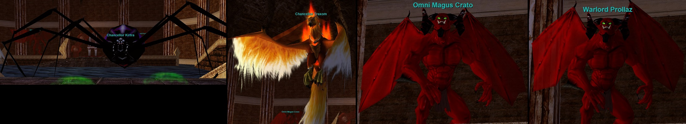
Chancellor Kirtra
- 230,000 HP (PQDI; eqprogression estimated 250K)
- Hits 551–1450 (PQDI; eqprogression estimated 1500+)
- Slowable
- Casts Web of Flame (PBAE, Root/-50 Mana Drain DoT, -150 Fire Based) 1 min CD
Quarm Script
Sourced from the Quarm server Lua script (pofire/encounters/Fennin.lua, SecretsOTheP/quests):
- Phase 3 of the army event — Chancellor Kirtra (217432) spawns at a fixed location near Fennin's castle once all phase 2 mobs (the Four Lords and their wave) are dead.
- Spawned alongside the other three council guardians: Chancellor Traxom (217433), Omni Magus Crato (217429), and Warlord Prollaz (217428).
- When all four council guardians are dead, Fennin Ro (217440) spawns on his throne and ten elite guardian spawns (369529–369538) are enabled to hold the bridge.
| Level | 78 |
|---|---|
| HP | 230,000 |
| Hits | 551 - 1450 |
| Resistances | MR 125 / CR 50 / FR 1000 / DR 80 / PR 110 |
| Special Abilities | Summon, Enrage, Dual Wield, Do Not Equip, Magical Attack, Unmezzable, Uncharmable, Unstunable, Unsnarable, Unfearable, Immune to fleeing, Immune to melee except magical, NO LOITERING |
| Can Cast | Web of Flame |
Cross-referenced from pqdi.cc (Project Quarm Database Interface)
Chancellor Traxom
- 230,000 HP (PQDI; eqprogression estimated 250K)
- Hits 476–1546 (PQDI; eqprogression estimated 1600+)
- Slowable
- Casts Rising Suns (Single Target, Blind/500 DoT, -300 Fire Based), 1 min CD
Quarm Script
Sourced from the Quarm server Lua script (pofire/encounters/Fennin.lua, SecretsOTheP/quests):
- Phase 3 of the army event — Chancellor Traxom (217433) spawns at a fixed location near Fennin's castle once all phase 2 mobs (the Four Lords and their wave) are dead.
- Spawned alongside the other three council guardians: Chancellor Kirtra (217432), Omni Magus Crato (217429), and Warlord Prollaz (217428).
- When all four council guardians are dead, Fennin Ro (217440) spawns on his throne and ten elite guardian spawns (369529–369538) are enabled to hold the bridge.
| Level | 78 |
|---|---|
| HP | 230,000 |
| Hits | 476 - 1546 |
| Resistances | MR 125 / CR 50 / FR 1000 / DR 80 / PR 110 |
| Special Abilities | Summon, Enrage, Dual Wield, Do Not Equip, Magical Attack, Unmezzable, Uncharmable, Unstunable, Unsnarable, Unfearable, Immune to fleeing, Immune to melee except magical, NO LOITERING |
| Can Cast | Rising Suns |
Cross-referenced from pqdi.cc (Project Quarm Database Interface)
Omni Magus Crato
- 215,000 HP (PQDI; eqprogression estimated 250K)
- Hit me for 600 max only on 35 Hstam Warrior, but likely hits harder.
- Slowable
- Casts Comet of Flames (Targeted AE, 3300 DD/-500 Mana, -400 Fire Resist)
Quarm Script
Sourced from the Quarm server Lua script (pofire/encounters/Fennin.lua, SecretsOTheP/quests):
- Phase 3 of the army event — Omni Magus Crato (217429) spawns at a fixed location near Fennin's castle once all phase 2 mobs (the Four Lords and their wave) are dead.
- Spawned alongside the other three council guardians: Chancellor Kirtra (217432), Chancellor Traxom (217433), and Warlord Prollaz (217428).
- When all four council guardians are dead, Fennin Ro (217440) spawns on his throne and ten elite guardian spawns (369529–369538) are enabled to hold the bridge.
| Level | 78 |
|---|---|
| HP | 215,000 |
| Hits | 431 - 644 |
| Resistances | MR 125 / CR 50 / FR 1000 / DR 105 / PR 110 |
| Special Abilities | Summon, Enrage, Dual Wield, Do Not Equip, Magical Attack, Unmezzable, Uncharmable, Unstunable, Unsnarable, Unfearable, Immune to fleeing, Immune to melee except magical, NO LOITERING |
| Can Cast | Comet of Flames |
Cross-referenced from pqdi.cc (Project Quarm Database Interface)
Warlord Prollaz
- 250,000 HP
- Hits 971–1184 (PQDI; eqprogression estimated 1500+)
- Slowable
- Rampage
Quarm Script
Sourced from the Quarm server Lua script (pofire/encounters/Fennin.lua, SecretsOTheP/quests):
- Phase 3 of the army event — Warlord Prollaz (217428) spawns at a fixed location near Fennin's castle once all phase 2 mobs (the Four Lords and their wave) are dead.
- Spawned alongside the other three council guardians: Chancellor Kirtra (217432), Chancellor Traxom (217433), and Omni Magus Crato (217429).
- When all four council guardians are dead, Fennin Ro (217440) spawns on his throne and ten elite guardian spawns (369529–369538) are enabled to hold the bridge.
| Level | 78 |
|---|---|
| HP | 250,000 |
| Hits | 971 - 1184 |
| Resistances | MR 125 / CR 50 / FR 1000 / DR 105 / PR 110 |
| Special Abilities | Summon, Enrage, Rampage, Dual Wield, Do Not Equip, Magical Attack, Unmezzable, Uncharmable, Unstunable, Unsnarable, Unfearable, Immune to fleeing, Immune to melee except magical, NO LOITERING |
Cross-referenced from pqdi.cc (Project Quarm Database Interface)
General Druav Flamesinger
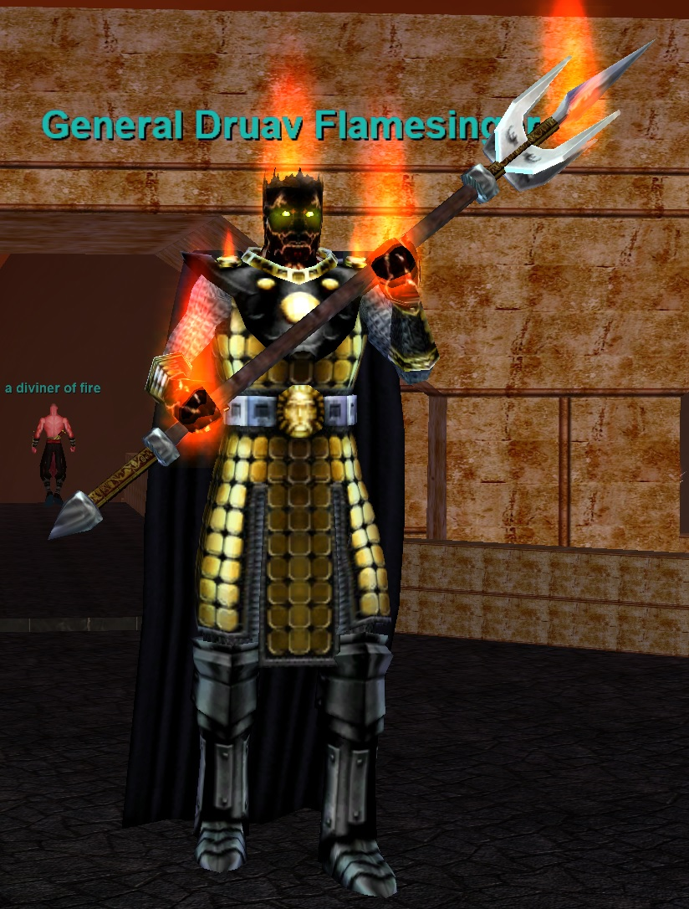
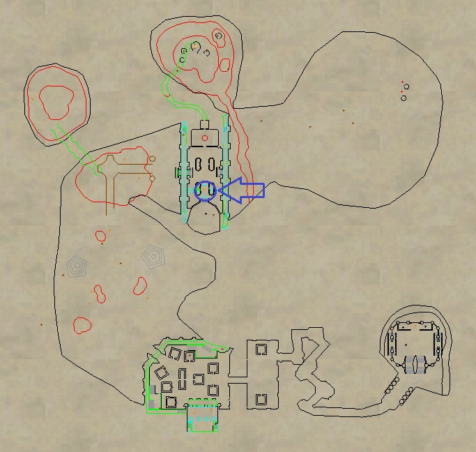
Fight Info
- 600,000 HP (PQDI; eqprogression estimated 650K)
- Hits 520 - 2264 (PQDI; eqprogression estimated 3,300+)
- Slowable
- Procs Fiery Strike (Single Target, 3000 DD + 5 sec stun, -350 Fire Based)
| Level | 75 |
|---|---|
| HP | 600,000 |
| Hits | 520 - 2264 |
| Resistances | MR 115 / CR 165 / FR 1000 / DR 155 / PR 150 |
| Special Abilities | Summon, Enrage, Dual Wield, Do Not Equip, Magical Attack, Unmezzable, Uncharmable, Unstunable, Unsnarable, Unfearable, Immune to fleeing, Immune to melee except magical, NO LOITERING |
| Procs | Fiery Strike |
Cross-referenced from pqdi.cc (Project Quarm Database Interface)
Jaxoliz Dawneyes
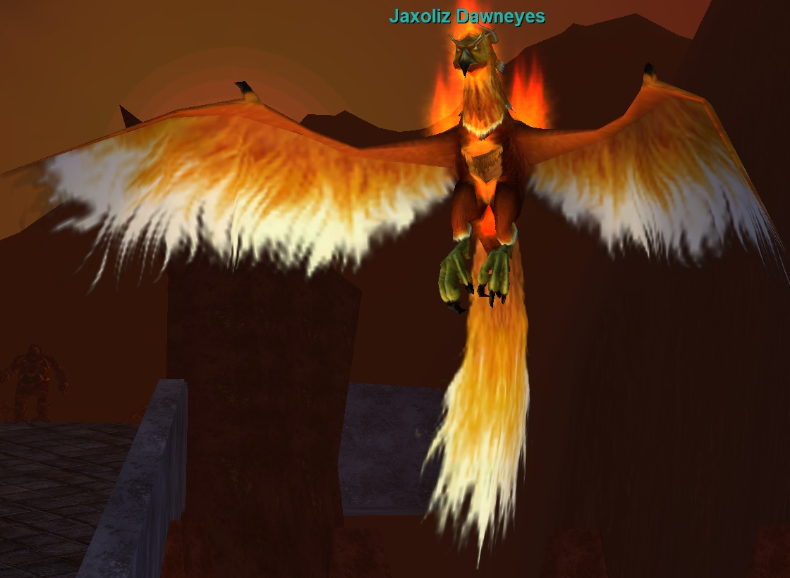
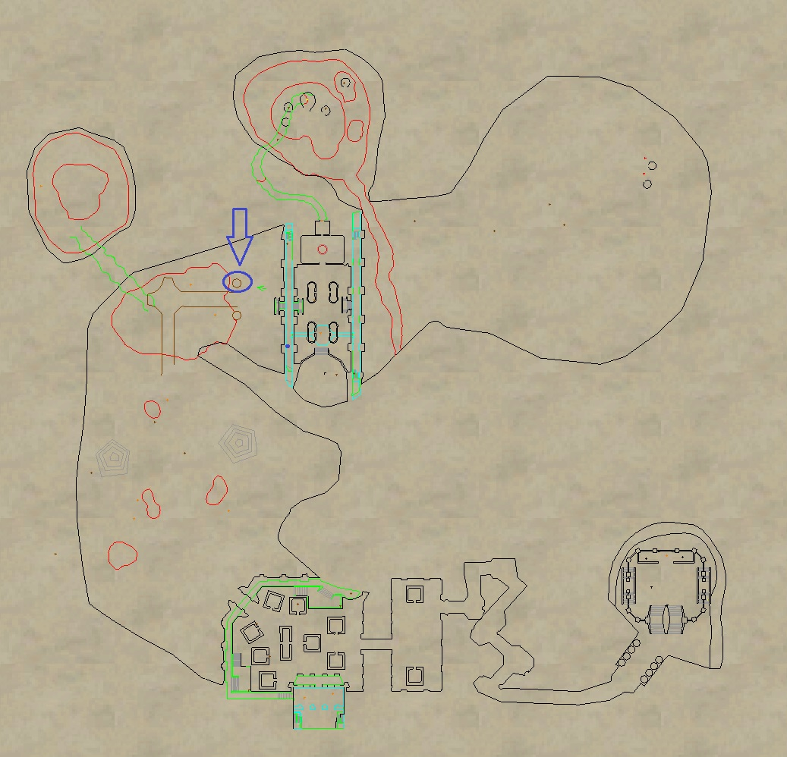
Fight Info
- 625,000 HP (PQDI; eqprogression estimated 700K)
- Hits 490 - 2698 (PQDI; eqprogression estimated 3,100+)
- Slowable
- Casts Phoenix Charm (Single Target, Charm, Unresistable, 120 sec recast)
| Level | 75 |
|---|---|
| HP | 625,000 |
| Hits | 490 - 2698 |
| Resistances | MR 165 / CR 165 / FR 1000 / DR 90 / PR 140 |
| Special Abilities | Summon, Enrage, Dual Wield, Do Not Equip, Magical Attack, Unmezzable, Uncharmable, Unstunable, Unsnarable, Unfearable, Immune to fleeing, Immune to melee except magical, NO LOITERING |
| Can Cast | Phoenix Charm |
Cross-referenced from pqdi.cc (Project Quarm Database Interface)
Criare Sunmane
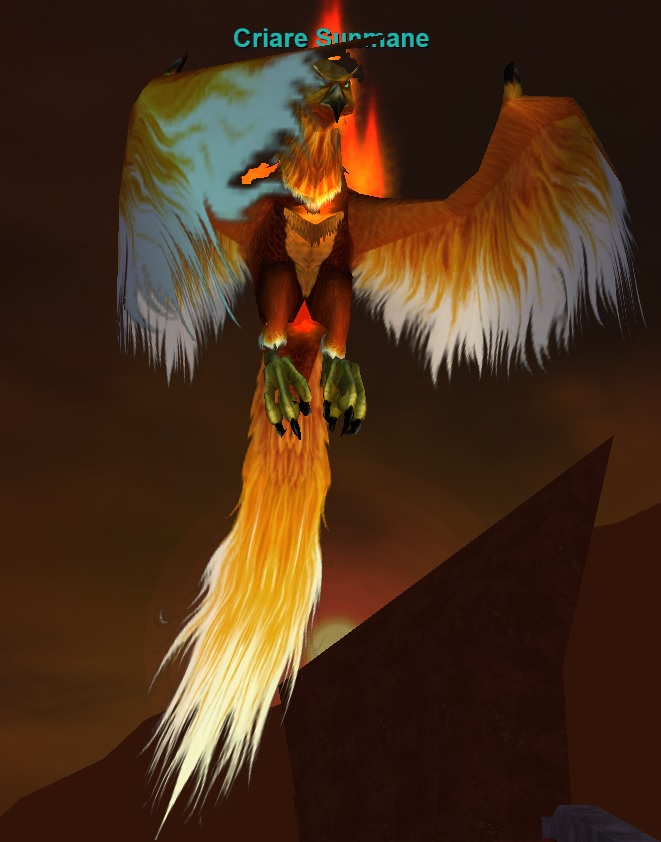
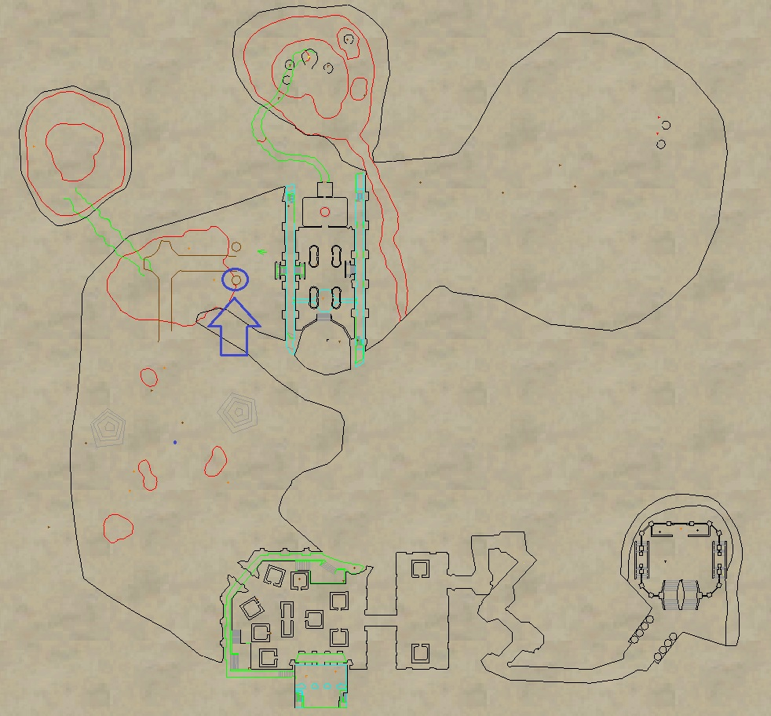
Fight Info
- 625,000 HP (PQDI; eqprogression estimated 700K)
- Hits 573 - 2317 (PQDI; eqprogression estimated 3,100+)
- Slowable
- Casts Phoenix Charm (Single Target, Charm, Unresistable, 120 sec recast)
| Level | 75 |
|---|---|
| HP | 625,000 |
| Hits | 573 - 2317 |
| Resistances | MR 165 / CR 165 / FR 1000 / DR 150 / PR 90 |
| Special Abilities | Summon, Enrage, Dual Wield, Do Not Equip, Magical Attack, Unmezzable, Uncharmable, Unstunable, Unsnarable, Unfearable, Immune to fleeing, Immune to melee except magical, NO LOITERING |
| Can Cast | Phoenix Charm |
Cross-referenced from pqdi.cc (Project Quarm Database Interface)
Quavonis Firetail
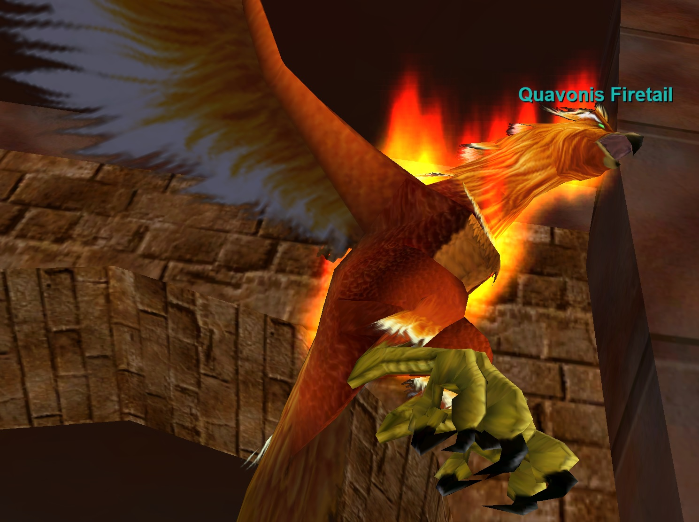
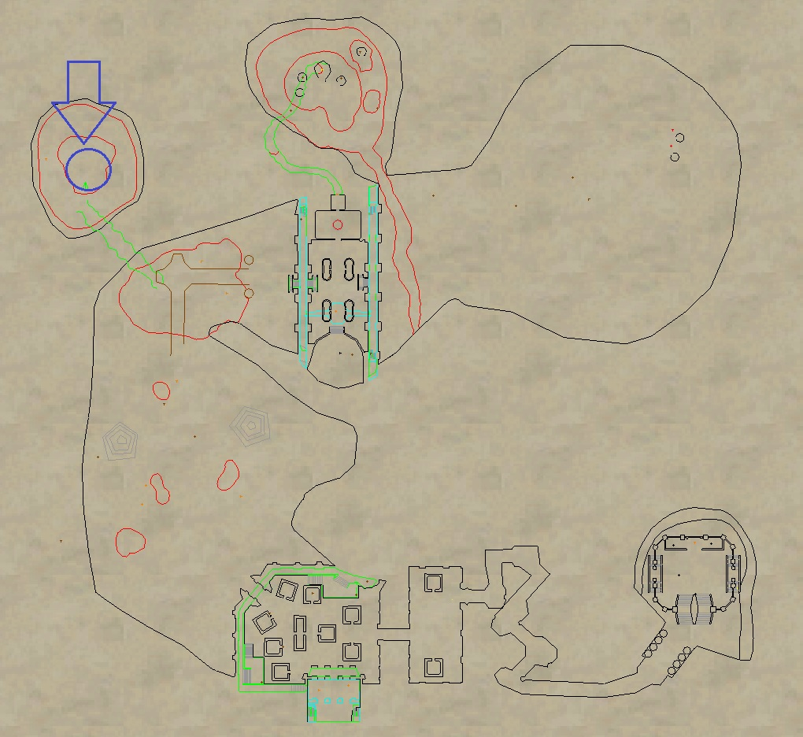
Fight Info
- 825,000 HP (PQDI; eqprogression estimated 800K – 900K)
- Hits 644 - 3300 (PQDI; eqprogression estimated 3,500+)
- Slowable
- Casts Juxyapose of Fire (PBAE, 500 DD + Shadowstep, -350 Fire Based, 24 sec recast)
| Level | 78 |
|---|---|
| HP | 825,000 |
| Hits | 644 - 3300 |
| Resistances | MR 170 / CR 50 / FR 1000 / DR 110 / PR 110 |
| Special Abilities | Summon, Enrage, Dual Wield, Do Not Equip, Magical Attack, Unmezzable, Uncharmable, Unstunable, Unsnarable, Unfearable, Immune to fleeing, Immune to melee except magical, NO LOITERING |
| Can Cast | Juxtapose of Fire |
Cross-referenced from pqdi.cc (Project Quarm Database Interface)
Magmaton
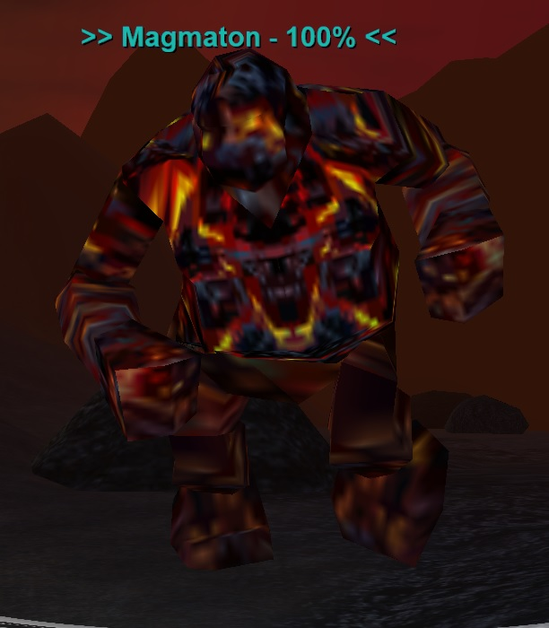
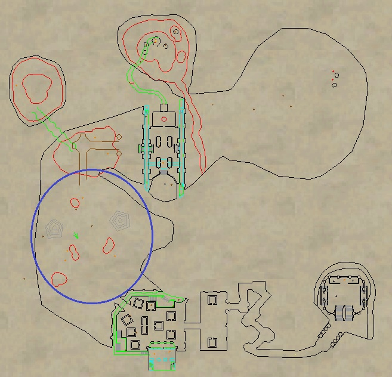
Fight Info
- 800,000 HP (PQDI; eqprogression estimated 900K)
- Hits 603 - 2929 (PQDI; eqprogression estimated 3,400+)
- Slowable
- Rampages
| Level | 75 |
|---|---|
| HP | 800,000 |
| Hits | 603 - 2929 |
| Resistances | MR 170 / CR 50 / FR 1000 / DR 150 / PR 165 |
| Special Abilities | Summon, Enrage, Area Rampage, Dual Wield, Do Not Equip, Magical Attack, Unmezzable, Uncharmable, Unstunable, Unsnarable, Unfearable, Immune to fleeing, Immune to melee except magical, NO LOITERING, Reverse Slow |
Cross-referenced from pqdi.cc (Project Quarm Database Interface)
Babnoxis the Spider Queen
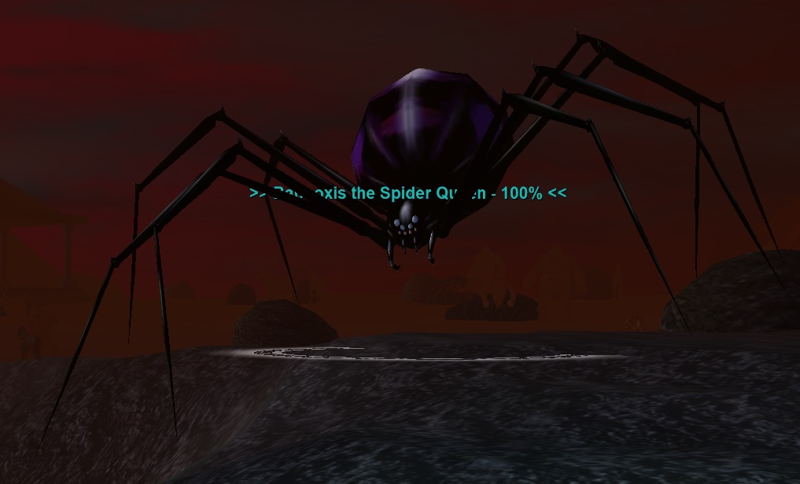
Fight Info
- 625,000 HP (PQDI; eqprogression estimated 700K)
- Hits 441 - 2107 (PQDI; eqprogression estimated 2,400+)
- Slowable
- Casts Poisoned Flames (PBAE, 500 DoT/125 Mana Drain, -350 Poison Based, 18 Poison Counter, 30 sec recast)
- Flurries
| Level | 75 |
|---|---|
| HP | 625,000 |
| Hits | 441 - 2107 |
| Resistances | MR 115 / CR 165 / FR 1000 / DR 165 / PR 1000 |
| Special Abilities | Summon, Enrage, Flurry, Dual Wield, Do Not Equip, Magical Attack, Unmezzable, Uncharmable, Unstunable, Unsnarable, Unfearable, Immune to fleeing, Immune to melee except magical, NO LOITERING |
| Can Cast | Poisoned Flames |
Cross-referenced from pqdi.cc (Project Quarm Database Interface)
Pyronis
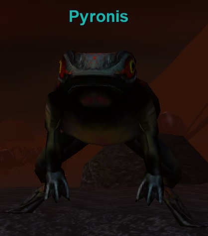
Fight Info
- 650,000 HP (PQDI; eqprogression estimated 750K)
- Hits 518 - 2650 (PQDI; eqprogression estimated 2,900+)
- Slowable
- Casts Mighty Bellow of Fire (PBAE, 1500 DD + 1 sec stun, -350 Fire based, 60 sec recast)
| Level | 75 |
|---|---|
| HP | 650,000 |
| Hits | 518 - 2650 |
| Resistances | MR 115 / CR 165 / FR 1000 / DR 165 / PR 155 |
| Special Abilities | Summon, Enrage, Dual Wield, Do Not Equip, Magical Attack, Unmezzable, Uncharmable, Unstunable, Unsnarable, Unfearable, Immune to fleeing, Immune to melee except magical, NO LOITERING |
| Can Cast | Mighty Bellow of Fire |
Cross-referenced from pqdi.cc (Project Quarm Database Interface)
Blazzax the Omnifiend
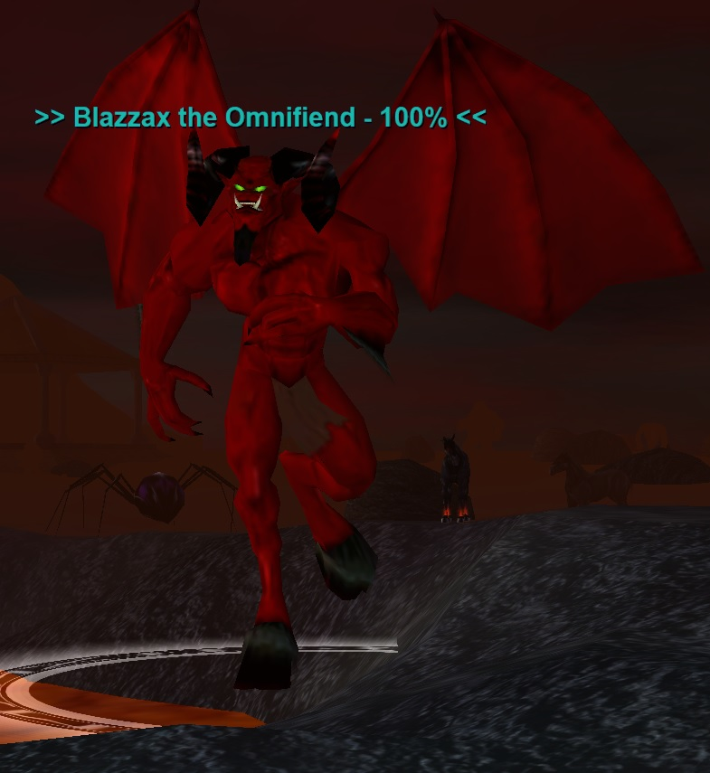
Fight Info
- 850,000 HP (PQDI; eqprogression estimated 1 Million)
- Hits 542 - 3540 (PQDI; eqprogression estimated 4,000+)
- Slowable
- Casts Nova Inferno (PBAE, 2000 DD, -350 Fire based, 30 sec recast)
| Level | 78 |
|---|---|
| HP | 850,000 |
| Hits | 542 - 3540 |
| Resistances | MR 170 / CR 165 / FR 1000 / DR 90 / PR 90 |
| Special Abilities | Summon, Enrage, Dual Wield, Do Not Equip, Magical Attack, Unmezzable, Uncharmable, Unstunable, Unsnarable, Unfearable, Immune to fleeing, Immune to melee except magical, NO LOITERING |
| Can Cast | Nova Inferno |
Cross-referenced from pqdi.cc (Project Quarm Database Interface)
General Reparm
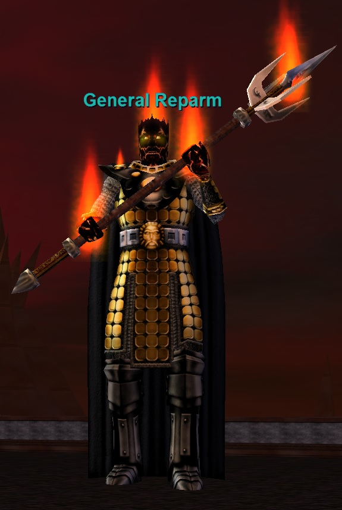
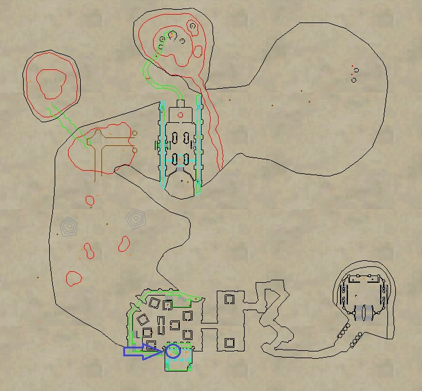
Fight Info
- 850,000 HP (PQDI; eqprogression estimated 900K – 1 Million)
- Hits 603 - 3174 (PQDI; eqprogression estimated 3,300+)
- Unslowable (PQDI; eqprogression listed Slowable)
- Procs Fiery Strike (Single Target, 3000 DD + 5 sec stun, -350 Fire Based)
| Level | 78 |
|---|---|
| HP | 850,000 |
| Hits | 603 - 3174 |
| Resistances | MR 170 / CR 165 / FR 1000 / DR 90 / PR 140 |
| Special Abilities | Summon, Enrage, Dual Wield, Do Not Equip, Magical Attack, Unslowable, Unmezzable, Uncharmable, Unstunable, Unsnarable, Unfearable, Immune to fleeing, Immune to melee except magical, NO LOITERING |
| Procs | Fiery Strike |
Cross-referenced from pqdi.cc (Project Quarm Database Interface)
Arch Mage Yozanni
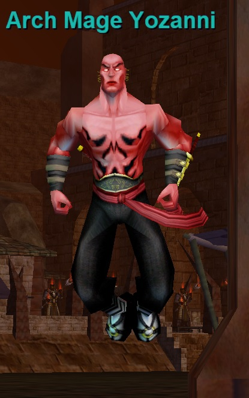
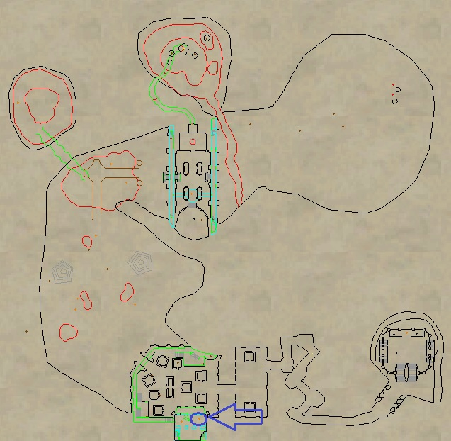
Fight Info
- 800,000 HP (PQDI; eqprogression estimated 850-900K)
- Hits 570 - 2968 (PQDI; eqprogression estimated 3,300+)
- Slowable
- Casts Disjunction of Flame (PBAE, -250 Mana Drain DoT/-450AC/-200 Attack, 18 curse counter, -350 Fire Based, 60 sec recast)
| Level | 78 |
|---|---|
| HP | 800,000 |
| Hits | 570 - 2968 |
| Resistances | MR 170 / CR 165 / FR 1000 / DR 150 / PR 95 |
| Special Abilities | Summon, Enrage, Dual Wield, Do Not Equip, Magical Attack, Unmezzable, Uncharmable, Unstunable, Unsnarable, Unfearable, Immune to fleeing, Immune to melee except magical, NO LOITERING |
| Can Cast | Disjunction of Flame |
Cross-referenced from pqdi.cc (Project Quarm Database Interface)
Fennin Ro the Tyrant of Fire
Phase 5 — The Final Fight
Time to kill Fennin Ro! Most guilds tank him in the outside corner of the steps. This is due to his AE rampage. New PoP guilds might want to consider a Complete Heal chain. Overgeared guilds can spam heals on the tank. Melee should stay max range. He has an AE DD and Mana Drain as well (see below).
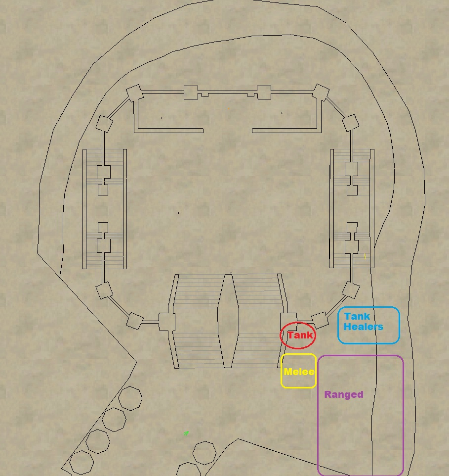
Fight Info
- 1,000,000 HP (PQDI; eqprogression estimated 1.1 Million)
- Hits 1048–1962 (PQDI; eqprogression estimated 2500+)
- Slowable
- AE Rampage
- Casts Cataclysm of Ro (PBAE, 3300 DD/-100 Mana Drain DoT/100 HP DoT, -1000 Fire Based, 18 curse cure)
Quarm Script
Sourced from the Quarm server Lua script (pofire/encounters/Fennin.lua, SecretsOTheP/quests):
- The 4-phase army event concludes here: Guardian of Doomfire → army waves → Four Lords → Council of Fire → Fennin Ro. Fennin (217440) spawns on his throne when all four council guardians are dead, and ten elite guardian spawns (369529–369538) are enabled to hold the bridge.
- The failure timer started by the Guardian's death (~4 hours 52 minutes, paused during combat) gains a one-time +2 hour extension (once per encounter) when Fennin spawns.
- On timer expiry (failure), all event mobs are depop'd, the elites are disabled, and the Guardian's spawn (367088) is set to respawn in 18 hours.
- On success, the Guardian's spawn is instead set to respawn in 5 days 18 hours.
- Fennin's death ends the event and spawns the Essence of Fire (217454) at his position, flagged to the killer with kill rights (say “hail” for Globe of Dancing Flame or Quintessence of Elements, up to 72 flags, despawns 20 min out of combat).
| Level | 80 |
|---|---|
| HP | 1,000,000 |
| Hits | 1048 - 1962 |
| Resistances | MR 115 / CR 115 / FR 1000 / DR 75 / PR 130 |
| Special Abilities | Summon, Enrage, Area Rampage, Dual Wield, Do Not Equip, Unmezzable, Uncharmable, Unstunable, Unsnarable, Immune to fleeing, Immune to melee except magical, NO LOITERING, Reverse Slow |
| Can Cast | Cataclysm of Ro |
Cross-referenced from pqdi.cc (Project Quarm Database Interface)
Loot
Reward items sourced from the Essence of Fire (Quarm script: pofire/Essence_of_Fire.lua).
Sources: eqprogression.com guide pages — Plane of Fire Boss Guide and Fennin Ro the Tyrant of Fire guide; pqdi.cc for boss statistics (Fennin Ro the Tyrant of Fire, Guardian of Doomfire, Azobian the Darklord, Hebabbilys the Ragelord, Javonn the Overlord, Reaxnous the Chaoslord, Chancellor Kirtra, Chancellor Traxom, Omni Magus Crato, Warlord Prollaz); Quarm server Lua scripts (SecretsOTheP/quests, poFire/) for event mechanics. Videos embedded from YouTube.